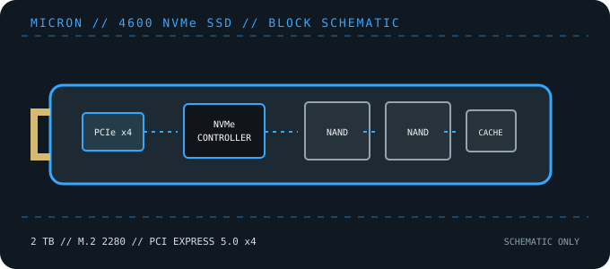

[ PCIE 5.0 NVME DRIVES // IDENTIFIED PRODUCT ]
Micron 4600 2 TB (MTFDKBA2T0QGE)
2 TB M.2 2280 PCIe Gen5 x4 client/OEM NVMe SSD identified by Micron code MTFDKBA2T0QGE. Verify support through the system supplier when sourcing this component outside an OEM build.

IDENTIFICATION: Confirm the printed model code, capacity, suffix, hardware revision and firmware against the actual drive. Similar family names can denote different heatsinks, controller platforms and performance. Values here identify the cited 2 TB SKU and remain subject to the linked manufacturer documentation.
Manufacturer-identified specifications
| Model / manufacturer code | Micron 4600 2 TB (MTFDKBA2T0QGE) — MTFDKBA2T0QGE |
|---|---|
| Capacity / physical format | 2 TB; M.2 2280, single-sided |
| Interface / lane width | PCI Express 5.0 x4; backward operation depends on host PCIe/NVMe support. |
| Protocol | NVMe command protocol; exact revision and optional features depend on drive firmware and host support. |
| Vendor-rated sequential performance | Up to 14,500 MB/s read / 12,000 MB/s write; peak ratings, not sustained guarantees. |
| Endurance / warranty | 1,200 TBW (reported for the 2 TB configuration; confirm in OEM documentation); OEM warranty/support terms vary by system and sales channel |
| Controller / flash | Silicon Motion SM2508 (reported for the 4600 platform); Micron 3D TLC NAND. Component details can vary by production revision; use the exact drive label and current manufacturer documentation. |
| Cooling / package note | Client/OEM-oriented component; thermal hardware, firmware and support obligations may be defined by the system vendor rather than a consumer retail package. |
Compatibility, installation & service
- This exact MPN is an M.2 2280 PCIe Gen5 x4 client SSD. Verify that the target system supports an interchangeable NVMe drive, the necessary keying/length, and the desired lane generation.
- Because the 4600 is commonly deployed through OEM channels, check the computer maker’s whitelist, firmware package, encryption policy and warranty channel. Firmware for an unrelated retail SSD is not interchangeable.
- Use the platform manual for thermal-pad and heatsink instructions, UEFI boot support and shared lanes. Back up before changing drives, especially when OEM recovery or device encryption is enabled.
- Before replacing a boot drive, create a recoverable backup and confirm OS recovery media, encryption keys and firmware settings. Follow clean shutdown and electrostatic-discharge precautions; do not hot-plug M.2 unless the platform manual explicitly supports it.
Product references
- Micron — 4600 NVMe SSDManufacturer family overview and client SSD information.
- StorageReview — Micron 4600 Gen5 SSD reviewIndependent product review and OEM-platform context.
Manufacturer ratings are capacity- and test-condition-specific. Independent tests characterize only the tested sample and workload. Consult current manuals and support portals for revisions, fit, firmware and warranty conditions.